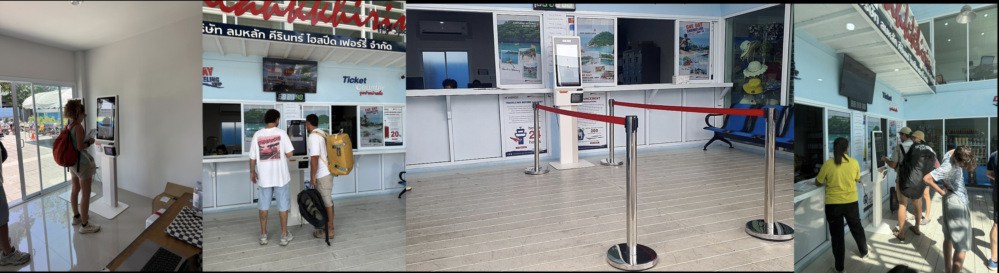

Киоск самообслуживания
Киоск самообслуживания для продажи билетов на наземном транспорте. Я собрала полную библиотеку компонентов с нуля и сделала рабочий прототип на Flutter — выстроив спокойный флоу бронирования с одним действием на экран, который любой может пройти без сотрудников и обучения.
Изучение киосков в реальной среде
Прежде чем что-либо проектировать, я собрала референсы киосков самообслуживания в транспорте и билетных сервисах — изучая форм-факторы, компоновку экранов и паттерны взаимодействия, чтобы определить правильную модель для нашего.
Я также провела полевое исследование, чтобы собрать основные боли людей, покупающих билеты в киосках самообслуживания, и посмотрела статистику о том, откуда приезжают пользователи. Поскольку сразу предложить мультиязычную поддержку мы не могли, я сделала вывод: интерфейс должен быть предельно понятным даже для того, кто не говорит ни по-английски, ни по-тайски.
Спроектировано для многих операторов, а не для одного
Этот киоск проектировался не для конкретной компании с известным, предсказуемым набором данных — а для множества разных операторов. Невозможно было заранее предсказать, где появятся дополнительные услуги, а также где и какие данные пассажиров потребуются.
Минимизировать трение и когнитивную нагрузку
Мультиязычная поддержка не могла войти в первый релиз, поэтому флоу должен был работать для любого — независимо от скорости чтения или привычности. Целью был максимально упрощённый флоу: одно действие на экран. Это удерживает когнитивную нагрузку низкой, снимает потребность в сотрудниках и обучении и делает каждый шаг безошибочно понятным на большом тач-дисплее.
Сделано, чтобы выпускать, а не только показывать
Я собрала всю библиотеку компонентов с нуля — каждую кнопку, поле ввода, цифровую клавиатуру, карточку билета и статусное состояние — с единообразными токенами цвета, отступов и тач-таргетами под размер киоска.
Затем я сделала рабочий прототип на Flutter. Дизайн был не статичными макетами: он работал на реальном устройстве, поэтому команда могла почувствовать настоящее взаимодействие, проверить тач-эргономику и двигаться прямо к продакшену с гораздо меньшим объёмом переделок.
Многие случаи я не документировала на доске — я дорабатывала их прямо в Claude. С готовыми экранами сборка прототипа со всеми правками заняла 3 часа.

Протестировано, затем донастроено
Я провела раунд юзабилити-тестирования прототипа и доработала несколько экранов на основе увиденного — подтягивая шаги, где люди колебались, и проясняя моменты, вызывавшие сомнение.
Попробуйте флоу бронирования
Настоящий рабочий прототип киоска — пройдите по всему флоу бронирования тапами, прямо как у терминала.
Работает на терминале
